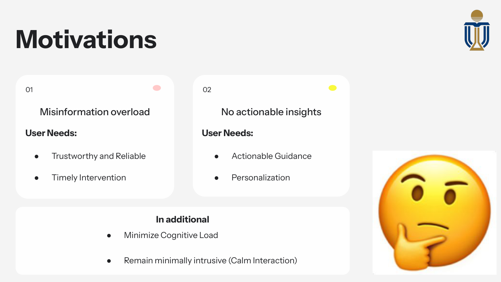
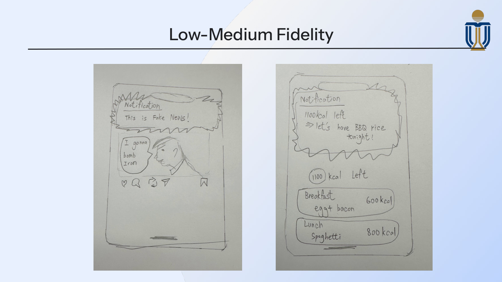
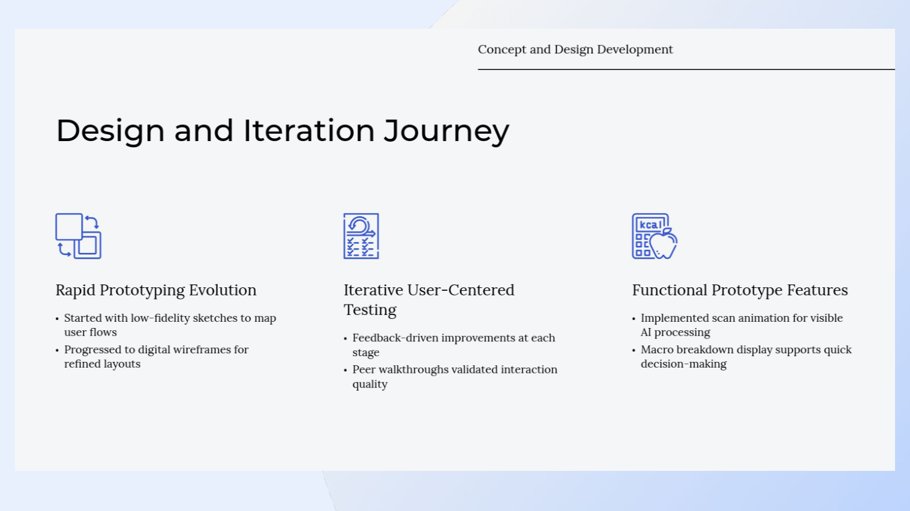
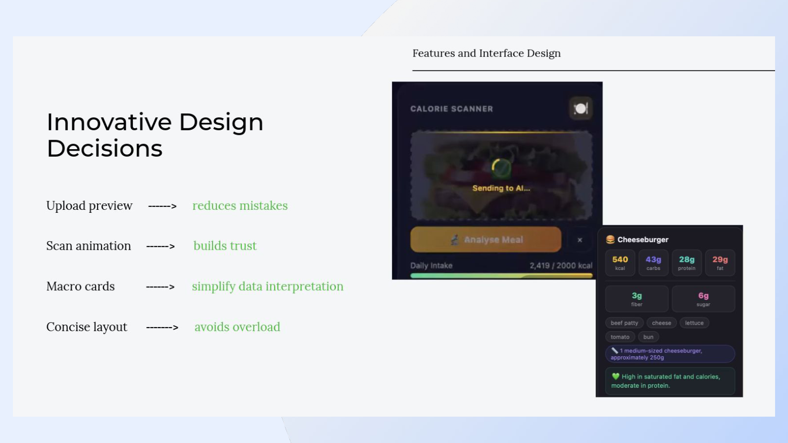
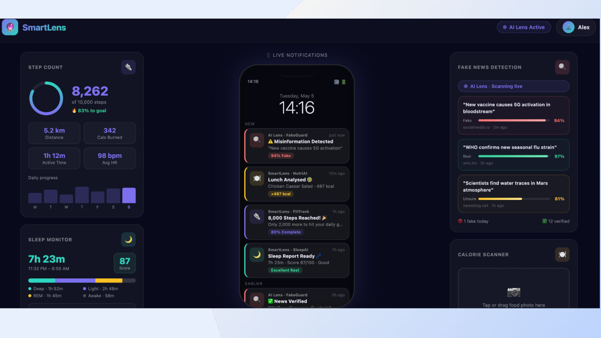
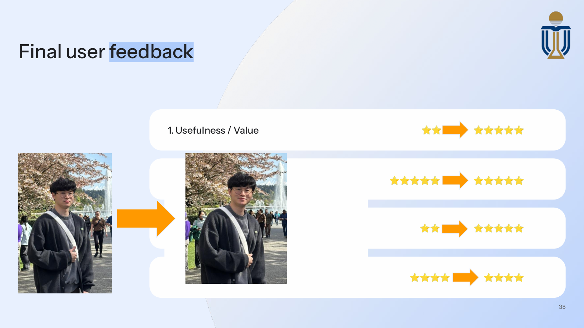

Project descriptionSection 1
Problem framing, goals, and feature direction.
This refined version strengthens the opening hierarchy, uses a more readable HCI-friendly font system, and presents the project with a premium landing-page treatment while keeping the course content structured, legible, and evidence-driven.
Shepherd is presented as an always-on, context-aware autonomous AI assistant designed to guide and protect users in daily life. The project responds to two key user needs identified during needfinding: post-COVID misinformation overload and the lack of actionable insight in passive health tracking.
SmartLens is the interface expression of that concept, combining fake-news detection, a calorie scanner, step tracking, sleep monitoring, and live notifications in a calm, readable dashboard.
Helps users quickly identify misleading health information on social platforms.
Uses image-based analysis to reduce manual effort and deliver a clearer nutrition breakdown.
Connects multiple signals to generate more meaningful support than isolated dashboards.
Positions trust, autonomy, and data control as core HCI requirements rather than afterthoughts.
We identified misinformation overload and non-actionable passive tracking as the two central user problems the system should address.
Different interaction pathways were compared, including scanning, manual entry, and voice, to evaluate effort, clarity, and practicality.
Hand-drawn sketches and early interface concepts were used to test notification formats, tracking displays, and information flow.
The team selected image-based food analysis because it reduced manual effort, improved clarity, and supported explainable output.
The SmartLens interface developed into a more complete prototype with upload preview, scan animation, macro cards, and integrated dashboard features.
Questionnaire-based evaluation examined usefulness, actionability, cognitive load, trust, privacy sensitivity, and preferences across age groups.
These slides establish the project’s foundation: misinformation overload, passive tracking without insight, and the resulting need for trustworthy, actionable, minimally intrusive support.

Extracted from the attached course PDF.
This evidence shows the early task-analysis phase and low-fidelity exploration of misinformation alerts and calorie-tracking interactions.

Extracted from the attached course PDF.
This stage documents why image-based food analysis was selected and how the team moved from conceptual comparison toward a more refined and testable interface direction.

Extracted from the attached course PDF.
This screenshot captures the visible AI-processing approach: upload preview, scanning feedback, macro cards, and progressive disclosure to make the system legible.

Extracted from the attached course PDF.
This is the strongest full-system visual in the deck, showing FakeGuard, NutriAI, FitTrack, SleepAI, live notifications, and the calorie scanner in one interface.

Extracted from the attached course PDF.
This stage demonstrates questionnaire design, feedback summaries, and what users found useful, actionable, and trustworthy across different ages.

Extracted from the attached course PDF.
This was a four-member group project, so this section describes the work from my own portfolio perspective rather than claiming sole authorship. My strongest contribution focus in the project narrative centered on actionability, trust-oriented interaction design, the SmartLens interface framing, and the calorie-scanner experience that turns AI output into something visible and usable.
Identified misinformation and passive tracking as the core user pain points.
Supported the shift toward image-based scanning and a more actionable system concept.
Helped shape the visible AI interaction model and SmartLens product narrative.
Interpreted user feedback around usefulness, trust, privacy, and notification sensitivity.
My BMind video paper examines the mirror as an AI system that interprets mood in a highly intimate setting. The central question is whether it remains a supportive wellness companion or begins to shape how a user is expected to feel in private.
The critique is structured through a good / bad / intimate lens so that benefits and concerns stay equally visible.
The heavy embedded iframes have been replaced with thumbnail-based preview cards and modal playback. This keeps the page lighter, improves visual hierarchy, and gives the media a more premium presentation.
A cleaner preview card for the BMind analysis, designed to feel more editorial and presentation-ready.
A higher-impact preview treatment that keeps the portfolio visually strong before playback starts.
The SmartLens concept maps naturally to a multi-agent system because each major function has a distinct role: misinformation analysis, nutrition interpretation, activity tracking, and sleep monitoring.
This modular structure supports clearer explanations and helps the interface surface only what matters at the right time.
An MSA framing supports progressive disclosure, modular reasoning, and privacy-sensitive design. It also makes the assistant feel less like a black box and more like a set of understandable specialist services working together.
Detects misleading health claims and exposes credibility cues.
Transforms food images into calories, macros, and clearer meal decisions.
Interprets step and activity data into simple progress nudges.
Turns sleep signals into understandable recovery feedback.
“HCI is not about adding intelligence everywhere, but about reducing effort, respecting users, and making system behaviour understandable and trustworthy.”
Closing reflection